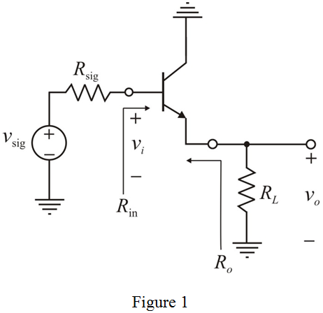
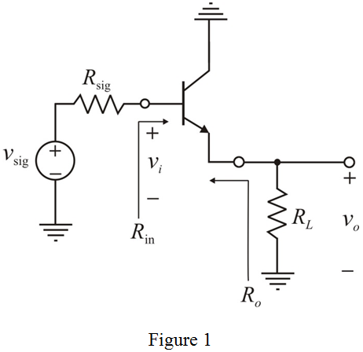

An emitter follower is required to deliver 0.5 V peak sinusoid to a load, .
The maximum peak of the voltage,  is 5 mV.
is 5 mV.
The circuit diagram of common-collector or emitter-follower is,

An emitter follower is required to deliver 0.5 V peak sinusoid to a load, .
The maximum peak of the voltage, is 5 mV.
The circuit diagram of common-collector or emitter-follower is,

The maximum emitter current in the circuit is,
Substitute 0.5 V for , and  for
for  .
.
Neglect the base terminal current, therefore, .
Thus, the value of maximum collect current is, .
The value of  resistance is,
resistance is,
Substitute 5 mV for  and 0.25 mA for .
and 0.25 mA for .
Consider another formula for .

Simplify the expression to find the emitter current.
Substitute 25 mV for thermal equivalent voltage,  , and for
, and for  .
.
The maximum current that flow in the emitter branch in positive cycle is,
The minimum current that flow in the emitter branch in positive cycle is,
Thus, the maximum and minimum current in the emitter branch are: and  respectively.
respectively.
The overall gain of the amplifier is,
Consider that the current gain,  is 100.
is 100.
Substitute 100 for  ,
,  for
for  , for
, for  , and
, and  for signal resistance,
for signal resistance,  .
.
Thus, the overall gain,  of the amplifier is, .
of the amplifier is, .
Substitute 0.5 V for  and 0.5 V/V for
and 0.5 V/V for  .
.
Thus, the amplitude of the input signal,  is,
is,  .
.